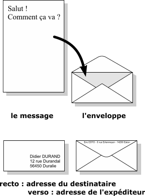
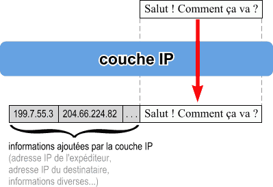
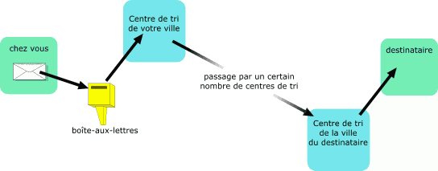
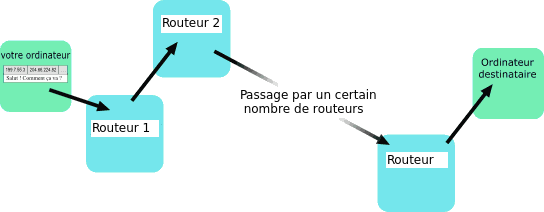
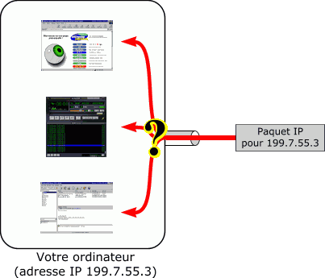
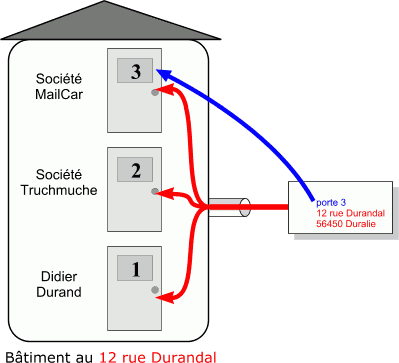
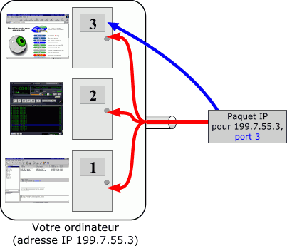
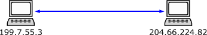
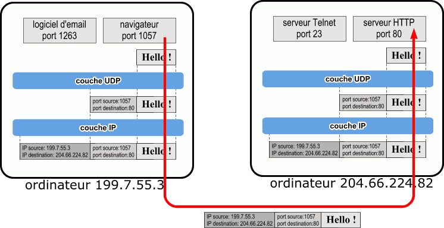
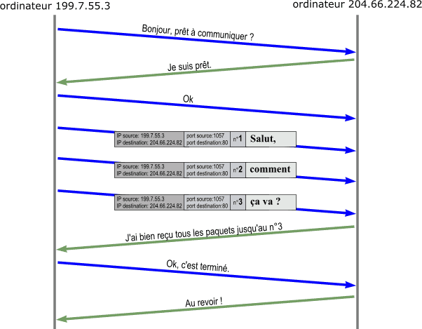

Le protocole TCP/IP
TCP/IP est un protocole, c'est à dire un ensemble de règles de communication.
Le protocole IP
Définition (Protocole IP) : IP (Internet Protocol) veut dire "le protocole d'Internet". C'est le principal protocole utilisé sur Internet.
Internet signifie Inter-networks, c'est à dire "entre réseaux".
Internet est donc l'interconnexion des réseaux de la planète. C'est un super réseau.
Le protocole IP permet aux ordinateurs reliés à ces réseaux de dialoguer entre eux.
Règles du protocole IP
On va faire un parallèle entre ce protocole IP et celui de la poste.
Quand on veut envoyer une lettre par la poste:
- on place la lettre dans une enveloppe,
- sur le recto on inscrit l'adresse du destinataire,
- au dos (au verso), on écrit l'adresse de l'expéditeur (la nôtre).

Ce sont des règles utilisées par tout le monde. On appelle ça un protocole.
Sur Internet, c'est à peu près la même chose: chaque message (chaque paquet de données) est enveloppé par la couche IP qui y ajoute différentes informations, dont les deux premières sont essentielles :
- l'adresse IP de l'expéditeur,
- l'adresse IP du destinataire,
- différentes données supplémentaires (qui permettent de bien contrôler
l'acheminement du message).

Routage IP
Pour envoyer une lettre, on la poste dans la boîte aux lettres la plus proche. Ce courrier est relevé, envoyé au centre de tri de notre ville, puis transmis à d'autres centres de tri jusqu'à atteindre le destinataire.

Pour Internet c'est un peu la même chose.
Définition (Routage IP) :
On transmet le paquet IP au routeur le plus proche (celui de notre FAI, fournisseur d'accès internet en général). Le paquet IP va transiter ensuite de routeur en routeur jusqu'à atteindre le destinataire.

Les numéros de port et le protocole UDP
Avec le protocole IP, on peut envoyer et recevoir des paquets de données
d'un ordinateur à un autre.
Mais imaginons maintenant que nous ayons plusieurs programmes qui fonctionnent en même temps sur le même ordinateur: un navigateur, un logiciel d'email et un logiciel pour écouter la radio sur Internet.
Si l'ordinateur reçoit un paquet IP, comment savoir à quel logiciel donner ce paquet IP ?

Pour résoudre ce problème, on attribue un numéro unique à chaque logiciel dans l'ordinateur.
Il suffit alors de mettre ce numéro dans chaque paquet IP pour pouvoir
s'adresser à tel ou tel logiciel.
Ces numéros sont appelé numéros de port (pensez aux "portes" d'une maison:
à une adresse donnée, on va pouvoir déposer les lettres à différentes portes à cette adresse).
Définition (Numéro de port) :
Un numéro de port est un numéro qui sert à identifier l'application concernée (mail, page web,
transfert de fichiers, etc ...) lorsqu'un paquet de données arrive vers un ordinateur. Le protocole qui s'occupe des
numéro de port est le protocole UDP.

Pour Internet c'est un peu la même chose.
On rajoute en plus des informations du protocole IP un numéro de port, c'est à dire une deuxième couche d'informations, qui permet d'identifier l'application concernée.

Ainsi, l'adresse IP permet de s'adresser à un ordinateur donné, et le numéro de port permet de s'adresser à un logiciel particulier sur cet ordinateur.
Le protocole UDP/IP est un protocole qui permet justement d'utiliser des numéros de ports en plus des adresses IP (On l'appelle UDP/IP car il fonctionne au dessus d'IP).
Le protocole IP s'occupe des adresses IP et le protocole UDP
s'occupe des numéro de ports.
Avec le protocole IP on peut envoyer des données d'un ordinateur A à un ordinateur B.

Avec le protocole UDP/IP, on est plus précis :
on envoie des données d'une application x sur l'ordinateur A vers une application y
sur l'ordinateur B.
Par exemple, votre navigateur peut envoyer un message à un serveur HTTP (un serveur Web):

Les sockets
Chaque couche de protocole (UDP et IP) va ajouter ses informations.
Les informations de IP vont permettre d'acheminer le paquet à destination du bon ordinateur. Une fois arrivé à l'ordinateur en question, la couche UDP va délivrer le paquet au bon logiciel
(ici: au serveur HTTP).
Les deux logiciels se contentent d'émettre et de recevoir des données ("Hello !"). Les couches UDP et IP en dessous s'occupent de tout.
Ce couple (199.7.55.3:1057, 204.66.224.82:80) est appelé un socket.
Un socket identifie de façon unique une communication entre deux logiciels et se
présente sous la forme :
( adresse_IP_source : port_source ,
adresse_IP_destination : port_destination )
Voici les numéros de ports des applications les plus courantes :
- 20 et 21 pour le transfert de fichiers via le protocole FTP.
- 25 pour l'envoie de courier éléctronique (email) via le protocole SMTP.
- 53 pour la résolution de nom de domaine en adresse IP via le protocole DNS.
- 80 pour consulter un serveur HTTP par le biais d'un navigateur via le protocole HTTP.
- 110 pour la récupération de son courier éléctronique (email) via le protocole
POP.
Le protocole TCP
On peut faire communiquer 2 logiciels situés sur des ordinateurs différents, grâce au protocole
UDP/IP.
Mais il y a encore de petits problèmes:
- Quand vous envoyez un paquet IP sur Internet, il passe par des dizaines d'ordinateurs
(essentiellement des routeurs).
Et il arrive que des paquets IP se perdent ou arrivent en double exemplaire.
- Même si le paquet arrive à destination, rien ne vous permet de savoir si le
paquet est bien arrivé (aucun accusé de réception).
- La taille des paquets IP est limitée (environ 1500 octets).
Comment faire pour envoyer une photo JPEG qui fait 62000 octets ?
C'est pour cela qu'a été conçu le protocole TCP, afin résoudre ce genre de problèmes.
Objectifs du protocole TCP :
Le protocole TCP permet :
- de faire tout ce que UDP sait faire (traiter les numéros de ports notamment) ;
- de vérifier que le destinataire est prêt à recevoir les données ;
- de découper les gros paquets de données en paquets plus petits pour que le protocole IP
les accepte ;
- de numéroter les paquets, et à la réception de vérifier qu'ils sont tous bien arrivés, de redemander les paquets manquants et de les réassembler avant de les donner aux logiciels. Des accusés de réception sont envoyés pour prévenir l'expéditeur que les données sont bien arrivées.
Par exemple, pour envoyer le message "Salut, comment ça va ?", voilà ce que fait le protocole TCP
(Chaque flèche représente 1 paquet IP):

A l'arrivée, sur l'ordinateur 204.66.224.82, la couche TCP reconstitue le message "Salut, comment ça va ?" à partir des 3 paquets IP reçus et le donne au logiciel qui est sur le port 80.
Conclusion sur le protocole TCP/IP et encapsulation
Avec le protocole TCP/IP, on peut communiquer de façon fiable entre logiciels situés sur des ordinateurs différents.
Ce protocole TCP/IP est utilisé pour des tas de choses :
- Dans votre navigateur, le protocole HTTP utilise le protocole TCP/IP pour envoyer et recevoir des pages HTML, des images GIF, JPG et toutes sortes d'autres données.
- FTP est un protocole qui permet d'envoyer et recevoir des fichiers. Il utilise également
le protocole TCP/IP.
- Votre logiciel de courrier électronique utilise les protocoles SMTP et POP3
pour envoyer et recevoir des emails. SMTP et POP3 utilisent eux aussi TCP/IP.
- Votre navigateur (et d'autres logiciels) utilisent le protocole DNS pour trouver
l'adresse IP d'un ordinateur à partir de son nom (par exemple, de trouver 216.32.74.52 à partir de 'www.yahoo.com'). Le protocole DNS utilise UDP/IP et TCP/IP en fonction de ses besoins.
Il existe ainsi des centaines de protocoles différents qui utilisent les protocoles TCP/IP ou
UDP/IP. Ces protocoles vont rajouter une nouvelle couche d'informations qui seront tranmises avec les données de départ.
Cette structure en couches successives s'appelle l'encapsulation : on dit que les données à transmettre sont encapsulées, c'est à dire qu'on leur ajoute plusieurs couches d'informations qui correspondent à des protocoles différents.
L'avantage de TCP sur UDP est que TCP permet des communications fiables. L'inconvénient est qu'il nécessite une négociation ("Bonjour, prêt à communiquer ?" etc.), ce qui prend du temps, donc TCP est plus lent que UDP.
Quiz 4